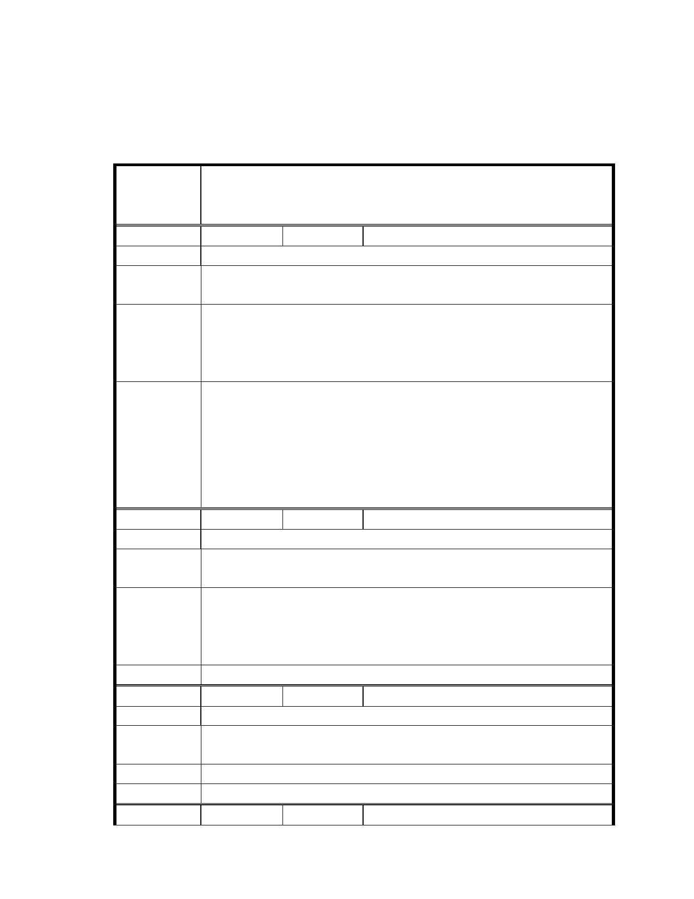

則下，都市計畫委員會於後續審議時得以先行審議。
三、本案公民或團體所提意見錄請市府納入檢討時參考。
臺北市都市計畫委員會公民團體陳情意見綜理表
「變更臺北市內湖區成功路五段大湖公園北側部分保護區及道路用地為
案 名 社會福利特定專用區主要計畫案」及「擬訂臺北市內湖區成功路五段大
湖公園北側社會福利特定專用區細部計畫案」
編 號１
陳情人 廖新樹
陳 情 理 由 為求公平正義，不致有人損失過大。
該開發區應該將附近相鄰土地整體規劃設計，依內湖重劃方式，慈濟取
建議辦法
得用地，地主也能興建房舍。
本案係由保護區變更為社會福利特定專用區，並供財團法人中華民國佛
市 府 說 明 教慈濟慈善事業基金會專作社會福利事業使用，與周邊地主欲透過整體
變更規劃作為住宅用地使用之目的不同，故周邊土地不宜納入共同變更
範圍。
一、市府即將辦理公開展覽內湖區通盤檢討案，本案慈濟基金會所提個案變
更位於內湖區，基於地區整體發展考量，請市府納入內湖區通盤檢討案
委員會決議
內進行檢討。
二、本基地已歷經多次審議，在不違背內湖區之整體規劃與計畫檢討原則下，
都市計畫委員會於後續審議時得以先行審議。
三、本案公民或團體所提意見錄請市府納入檢討時參考。
編 號2
陳情人 廖新樹
陳 情 理 由 該區域排水不良經常淹水，導致農作物無法收成。
慈濟土地墊高之高度不應高於其後面之土地高度，才不致於後面土地變
建議辦法
水池。
基地內早年遭人違法填土之事，慈濟購入土地後受限法令規定無法進行
相關改善作業，須待本案完成都市計畫變更程序以及相關開發許可之審
市府說明
議後始得進行。目前已初步規劃相關排水、沉砂滯洪設施，未來將著手
建構、改善排水系統，可有效提升地區排水防災機能。
委 員 會 決 議 同編號 1。
編 號3
陳情人 林盟富
陳 情 理 由 慈濟變更區域，應該顧及該區域之地主及相關地主之權益。
應將附近保護區一併檢討讓有關地主能得到應當之權利，慈濟也能順利
建議辦法
取得用地。
市 府 說 明 同編號 1。
委 員 會 決 議 同編號 1。
編 號4
陳情人 朱文杉
- 10 -